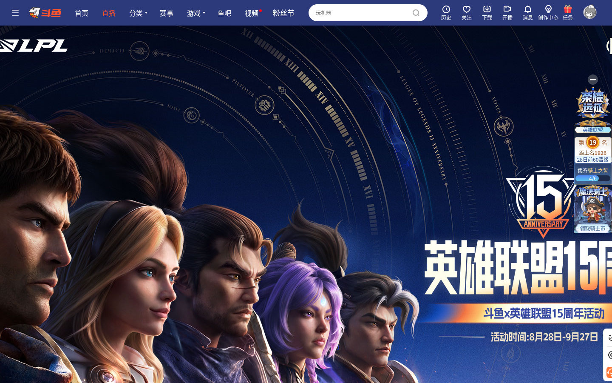
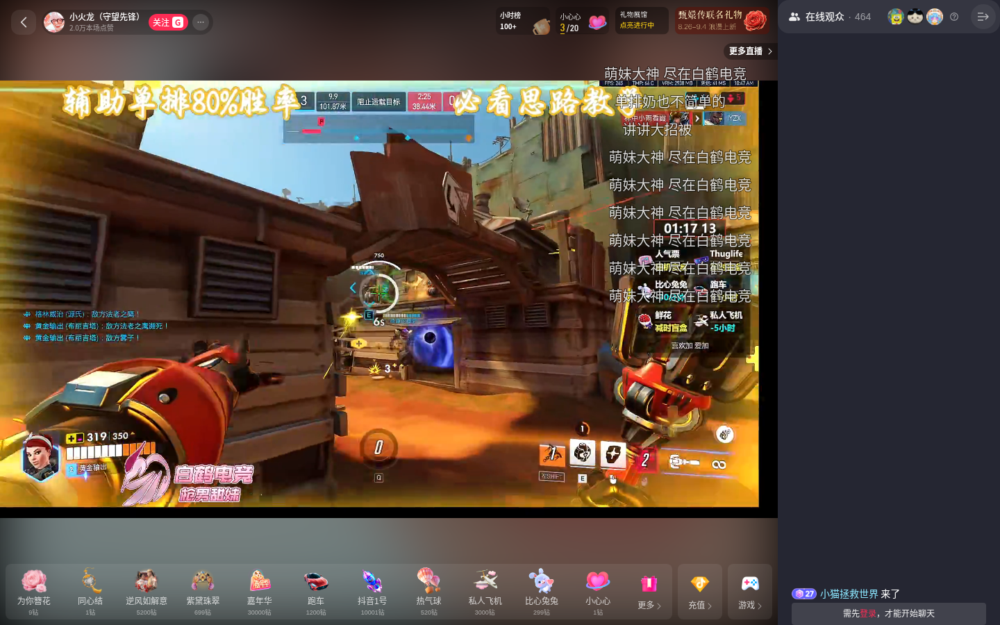

斗鱼·抖音直播间 · 实地验证报告
以无头浏览器直连两个目标直播间，逐项实测前期报告与 PRD 中的关键假设：选择器时效性、回填可行性、登录态边界。本报告为 PRD 开放问题提供实测裁决。
01 验证结论
实地验证是必要的，且收益直接。一轮实测裁决了 PRD 的 2 个开放问题、修正了 1 个关键认知、暴露了 1 个未登录场景的平台差异。核心结论：斗鱼侧全部核心选择器在 3 个月后仍有效、回填范式实测通过、弹幕字数上限 50 字；抖音侧未登录时弹幕列表不渲染（仅显示观众列表），适配必须以登录态为前置。
本次验证方法：在沙箱内启动无头 Chromium（Chrome for Testing 151），配置代理直连两个直播间，等待页面与弹幕完全渲染后，于真实页面上下文中执行选择器探测、结构枚举、回填模拟与网络捕获。斗鱼侧曾出现全屏活动弹窗遮挡，关闭后完成完整探测；抖音侧经历了四轮递进探测（语义类名 → 结构特征 → #chatroom 深挖 → 文本反向定位）。
02 斗鱼实测：选择器时效性对照
以 DouyuEx 逆向报告（2026.06.03 版本）提取的 14 个选择器为清单，在当前页面逐项验证：
| 选择器 | 用途 | 2026.06 记录 | 2026.08 实测 | 裁决 |
|---|---|---|---|---|
.ChatSend-txt | 弹幕输入框 | textarea/div 双形态 | 存在，当前为 DIV + contenteditable | 有效 |
.ChatSend-button | 发送按钮 | click() 触发 | 存在，未登录时 is-gray 置灰 | 有效 |
#js-barrage-list | 弹幕列表容器 | UL 容器 | 存在，含 8+ 条实时弹幕 | 有效 |
.Barrage-listItem | 单条弹幕行 | li 条目 | 有效（首轮为 0 系弹窗遮挡，关闭后确认） | 有效 |
.Barrage-content | 弹幕文本 | innerText 取文本 | 有效，存在颜色变体 --color0/5 | 有效 |
.Barrage-nickName | 弹幕昵称 | js-nick | 有效，含 --blue 等变体 | 有效 |
.ChatBarrageCollect | 官方收藏入口 | 工具栏按钮 | 存在 | 有效 |
.ChatToolBar__left | 工具栏容器 | 注入锚点 | 存在 | 有效 |
.danmu-e7f029 | 飘屏弹幕 | DOM 渲染 | 已失效，现为 .danmu-fbb2a3 | 哈希变更 |
.danmudiv-32f498 | 原生右键面板 | 注入锚点 | 右键未触发面板（未登录态） | 待登录验证 |
.ChatBarrageCollectPop-title | 收藏弹窗标题 | 注入搜索框锚点 | 需点击收藏入口后出现，未触发 | 待登录验证 |
核心交互选择器（输入框、发送、弹幕列表、条目、文本）在距 DouyuEx 停更约 3 个月后全部有效；仅飘屏弹幕哈希后缀按预期变更（e7f029 → fbb2a3）。验证了逆向报告"语义类名稳定、哈希类名易变"的判断——插件选择器策略应以语义类名为主干、哈希类名为运行时探测项。

.BarrageCmd-btn--close）后，弹幕列表正常渲染，抽样到 5 条真实弹幕文本03 斗鱼实测：回填与输入框
在真实页面上完整执行了一次回填操作（DouyuEx 范式的重演）：
input = document.querySelector('.ChatSend-txt'); // DIV, contenteditable=true input.focus(); input.innerText = '测试回填123'; input.dispatchEvent(new Event('input', { bubbles: true })); // 实测结果：innerText 成功写入"测试回填123"，事件派发正常
三点实测收获：
- 回填范式通过：DIV 形态 +
innerText赋值 +input事件派发，写入成功。DouyuEx 的双形态兼容策略在当前页面形态（纯 div、全站无 textarea）下走 div 分支即已覆盖。 - 字数上限实锤 50：输入框
maxlength="50"，占位文案「这里输入聊天内容」。PRD 开放问题 Q4（字数上限取值）就此裁决：斗鱼弹幕内容上限按 50 字设计。 - 遮挡物实测：聊天区存在「锁屏/解锁」悬浮工具条（
.Barrage-topFloater）会拦截弹幕条目的点击。插件实现右键收藏时需处理该遮挡（如临时隐藏工具条或使用坐标级事件），这是纯静态分析无法发现的细节。
未登录状态下：弹幕列表完整可见可交互、回填写入成功，但发送按钮置灰（is-gray）。右键弹幕未触发原生操作面板——原生面板大概率需要登录态，PRD 开放问题 Q1（右键面板共存方案）需在登录环境下二次验证。
04 抖音实测：登录墙与锚点体系
目标 URL 经 302 跳转至标准直播间域名 live.douyin.com/459635168107，页面正常渲染（标题「小火龙（守望先锋）的抖音直播间」），无强制登录拦截。但四轮递进探测得出一个改变二期工作量预估的事实：
未登录状态下，抖音弹幕列表不渲染。聊天区容器 #chatroom 仅显示「在线观众 · 464」列表与「需登录」提示，无弹幕消息条目；全页无 contenteditable 编辑器（输入框未渲染）。与斗鱼「未登录仍可看弹幕、可回填」形成平台差异。
四轮探测的完整证据链：
| 轮次 | 探测方式 | 结果 |
|---|---|---|
| 1 | 语义类名（comment/chat/danmu） | 全部 0 命中——抖音类名为纯哈希（如 OQcIVO9Z），无语义前缀 |
| 2 | 滚动容器结构特征 + data-e2e 枚举 | 发现 #chatroom 稳定 ID 与 data-e2e 测试属性体系（living-container、live-room-nickname 等 15+ 个） |
| 3 | #chatroom 内部深挖 | 仅 live-room-audience（观众信息），无滚动列表、无输入框 |
| 4 | 弹幕文本反向定位 + 登录提示检测 | chatroom 文本含「需登录」字样，弹幕文本全页 0 匹配 |
两点对二期适配的直接指引：
- 锚点策略可绕开哈希类名：抖音虽无语义类名，但保留了
#chatroom稳定 ID 和成体系的data-e2e测试属性，稳定性高于 CSS Modules 哈希，二期适配器应优先以此为锚点。 - 弹幕协议确认：网络捕获到
wss://webcast100-ws-web-lf.douyin.com/webcast/im/push/v2/WebSocket 连接（protobuf 二进制帧）。若登录后 DOM 路径受阻，协议层取弹幕是备选方案，但成本高于 DOM 路径。

#chatroom 仅观众列表，弹幕列表未渲染（需登录）05 对 PRD 的更新裁决
本次实测对 PRD（V1.0）六个开放问题的直接裁决与补充：
| 问题 | 实测裁决 | PRD 动作 |
|---|---|---|
| Q1 右键面板共存形态 | 未登录不触发原生面板，无法裁决 | 保留，转登录态验证清单 |
| Q2 追加模式可用性 | 回填写入成功，站内校验未测（涉发送） | 保留，按「不代发」原则降级为低优先级 |
| Q4 弹幕字数上限 | 斗鱼实锤 50 字（maxlength） | 关闭：内容字段上限按 50 字设计 |
| Q5 抖音飘屏路径 | 未登录无弹幕 DOM，无法验证 | 保留，随二期登录态验证 |
| 新增发现 1 | 抖音未登录弹幕列表不渲染 | FR-06 抖音适配验收标准需登录前置；「未登录引导登录」为二期必做交互 |
| 新增发现 2 | 斗鱼聊天区锁屏工具条遮挡点击 | FR-01 右键实现需增加遮挡处理（实现注意项） |
全程在无头浏览器完成，单站验证脚本运行 30-60 秒，未触碰任何登录、发送等账号敏感操作，符合产品「只回填不代发」原则。后续建议在发版前以真实登录会话复测一轮 Q1/Q5，预计同等成本。